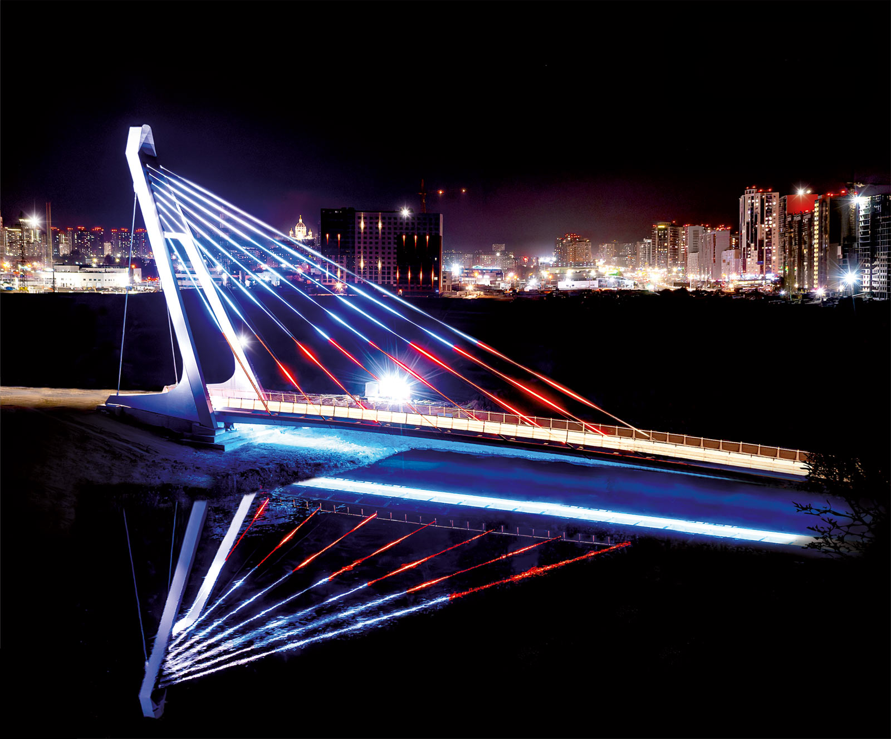
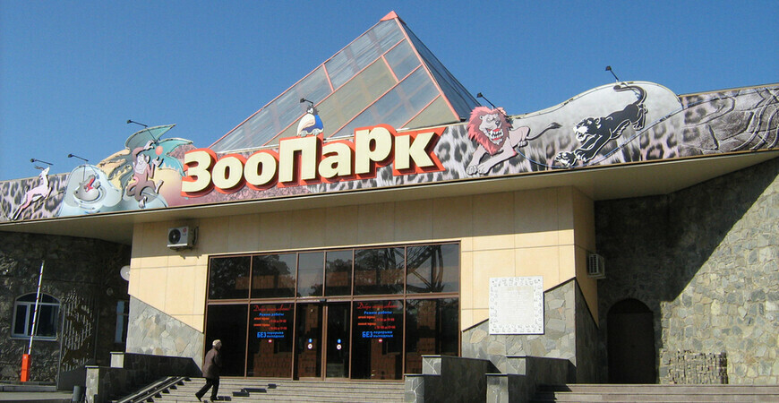

Велопешеходный вантовый мост
Отличный вариант свободным вечерком сходить на прогулку и по пути заглянуть в это место прогуляться. В вечернее время мост красиво светится, даёт хорошего такого +вайбика на вечер, советую посетить. Главное что нужно учесть - нужно выбрать правильную дорогу до моста. Есть человекческая асфальтированная дорога. Почему говорю, потому что гуляя по улице Набережная может показаться что до моста можно дойти через поле, но это далеко не самый лучший и верный путь для вашей обуви.
Челябинский Зоопарк
Если вы ни разу не были в зоопарке и очень хотите это сделать, то Челябинский Зоопарк отличный вариант, множество самых разных животных, от сусликов до буйвола. Мы ходили в зоопарк всей нашей группой, всем очень понравилось, впервые увидеть медведя гризли, белого медведя, представителей "больших кошачьих" - классные ощущения. Так же там можно встретить небольших но не менее опасных животных, например: россомаха. Эта каракуля наворачивала десятки и десятки кругов по своей огороженной зоне, бегала как не в себя, что было очень смешно. В общем, зоопарк - отличное место.
